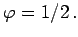

Inhalt Index DeskTop Bronstein

 Geometrie Differentialgeometrie Ebene Kurven Ausgezeichnete Kurvenpunkte und Asymptoten
Geometrie Differentialgeometrie Ebene Kurven Ausgezeichnete Kurvenpunkte und Asymptoten


Wendepunkte sind Kurvenpunkte, in denen die Krümmung der Kurve das Vorzeichen ändert.
Dabei liegt die Kurve in einer kleinen Umgebung dieses Punktes nicht auf einer Seite der Tangente, sondern wird von dieser durchsetzt. Im Wendepunkt ist K = 0 und
Die explizite Definitionsform sei durch die Gleichung y=f(x) (3.449) gegeben.
| Beispiel A |
|
|
| Beispiel B |
|
|
| Beispiel C |
|
für x=0 ist |
Die notwendige Bedingung f''(x)=0 (3.473) für die Existenz eines Wendepunktes im Falle der Kurvenvorgabe über die Definitionsform y=f(x) (3.449) wird bei Vorgaben mit den anderen Formen durch die folgenden analytischen Formulierungen der notwendigen Bedingung ersetzt:
| (3.474) |
| (3.475) |
| (3.476) |
In diesen Fällen liefert das Lösungssystem die Koordinaten der möglichen Wendepunkte.
| Beispiel A |
|
Betrachtung der verkürzten Zykloide
|
| Beispiel B |
|
Der Wendepunkt liegt bei dem Winkel  |
| Beispiel C |
|
Betrachtung der Hyperbel x2 - y2 = a2 : |